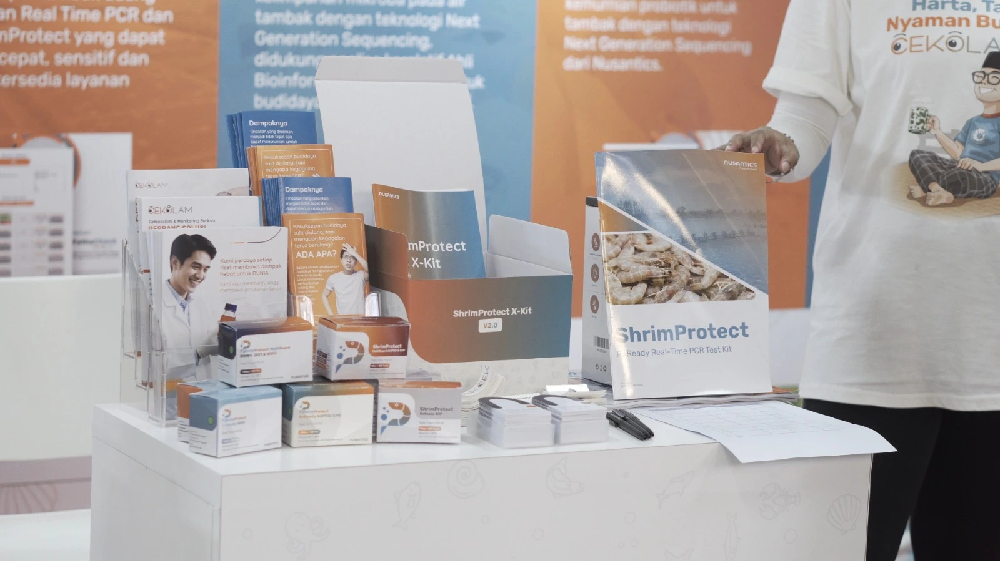
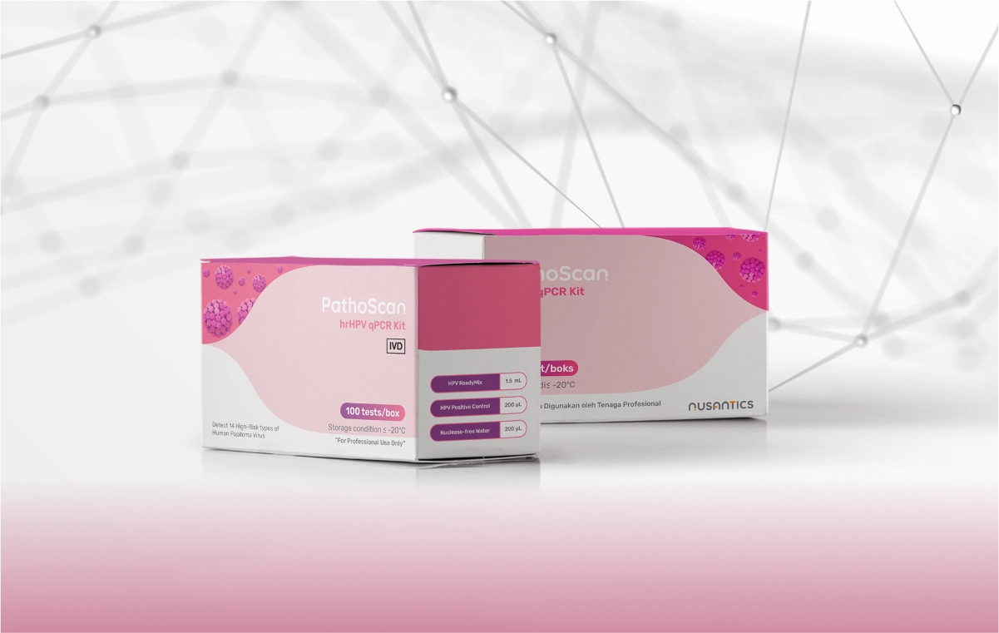
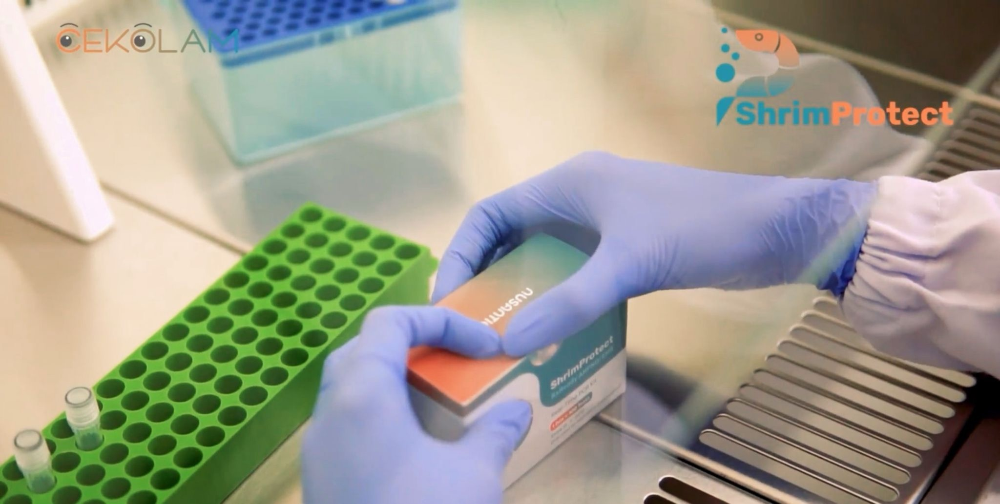
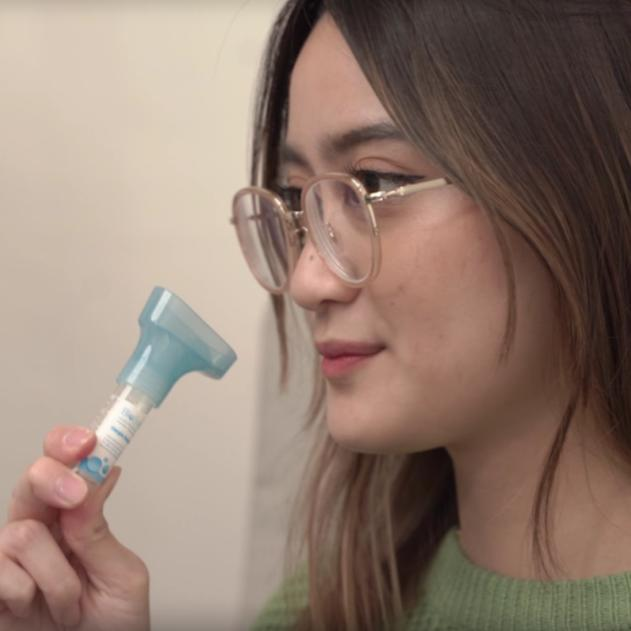
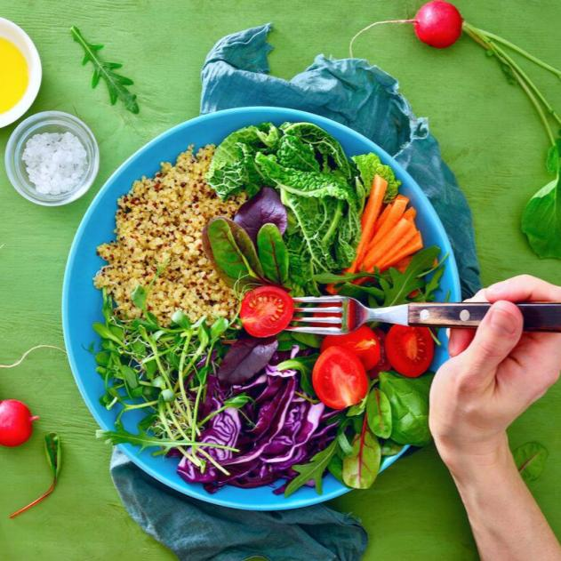
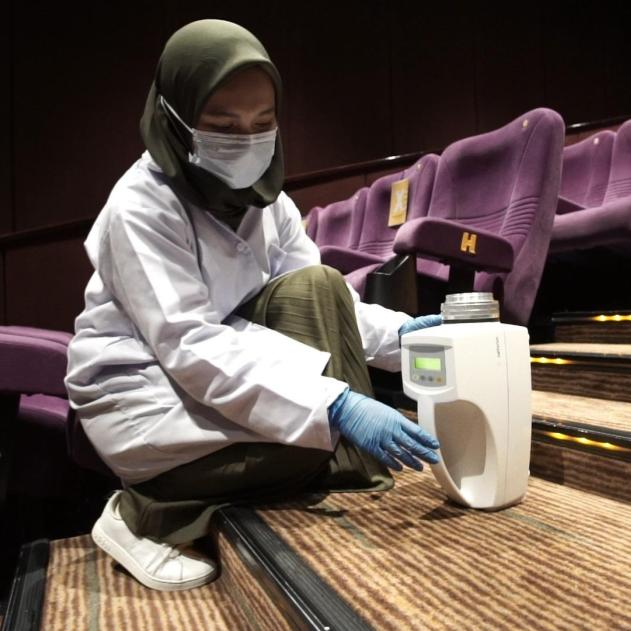

Knowledge Hub
News

CeKolam Presents Early Pathogen Detection Solution for Successful Harvests
CeKolam is at AIFE 2025 with an early shrimp disease detection solution to improve productivity and harvests in Indonesia.

Nusantics Launches PathoScan hrHPV qPCR Kit for HPV Screening Using Urine and Cervical Swab
Supporting the Indonesian Ministry of Health's national action plan, the PathoScan hrHPV qPCR Kit screening tool detects 14 high-risk (hr) HPV types.

CeKolam by Nusantics: A Modern Solution to Boost Shrimp Production in Indonesia
CeKolam provides early shrimp disease detection to help Indonesian farmers maintain quality and increase production.

Supporting the Government's Face-to-Face Learning Policy, Nusantics Launches the Back to School Movement
To support public health and the continuity of children's education, Nusantics launched the Back to School Movement. Read the full details in this press release.

Nusantics & Biofarma Launch PCR Gargle Bio Saliva
PT Biofarma and Nusantics launch Bio Saliva in a limited release, a COVID-19 PCR detection test using the gargle method.

Does Diet Affect Skin Health? See Nusantics' Research Results!
See Nusantics' research on why a healthy diet matters for keeping your skin well.

Inviting the Public to #KembalikeBioskop, Cinema XXI Partners with Nusantics on Research to Ensure Cinema Air Is Safe
Nusantics research finds that air samples in Cinema XXI theatres are free of SARS-CoV-2 virus particles and its mutations.